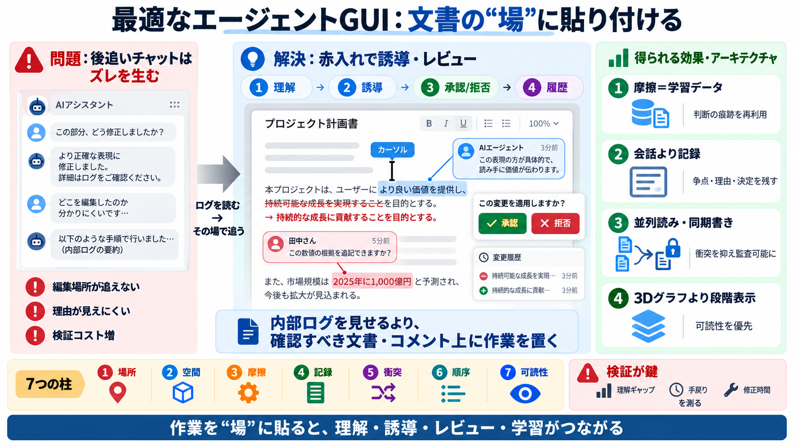

The Best Design for Agent GUIs | Lexifina
The alternative is a more visual approach. IE, an agent works beside the user in their document, so its work can be stee…

The alternative is a more visual approach. IE, an agent works beside the user in their document, so its work can be stee…
Single-agent systems are good in cognitive tasks and work well independently. In contrast, multi-agent systems combine d…
(2) Weaknesses. Multi-agent systems require the design and implementation of interaction mechanisms among multiple agen…
The user query gets encoded as a vector A vector database returns the top-k most similar chunks Those chunks assemble …
Here’s the critical thing to understand: every agent sees the full history before deciding what to say next. No agent op…